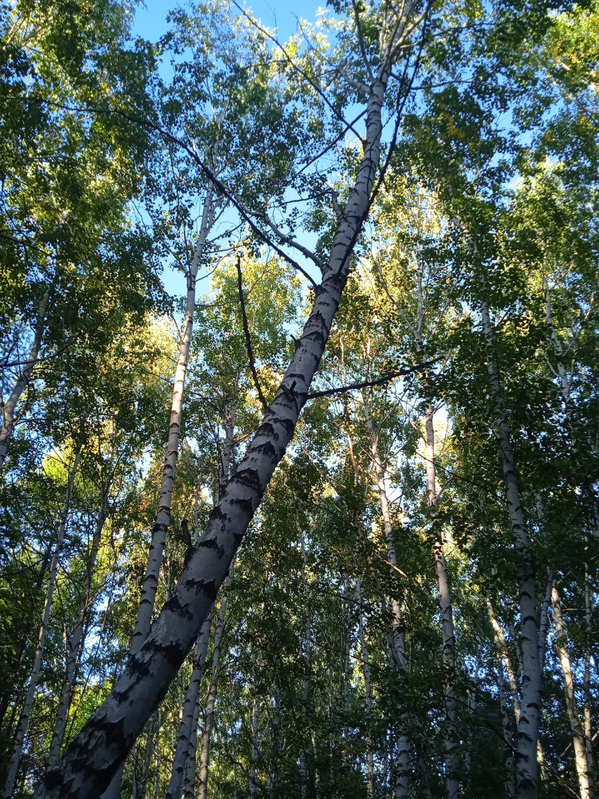

Фритрек и нулевой спринт: Подготовка к работе
</html>

Это было самое начало пути. На этом этапе важно было проникнуться основами и настроиться на учёбу. И, возможно, подумать, как новые знания могут повлиять на ваше будущее.
Был сентябрь, стояла тёплая солнечная погода, мы много гуляли и катались на велосипедах... Именно в это время мы и начали знакомиться с фронтенд-разработкой...